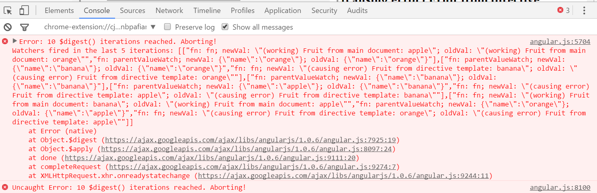
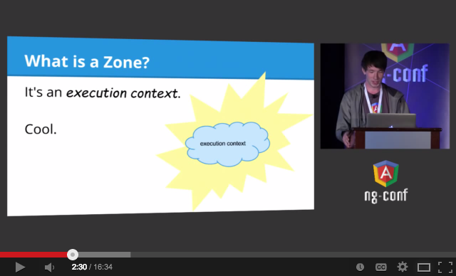
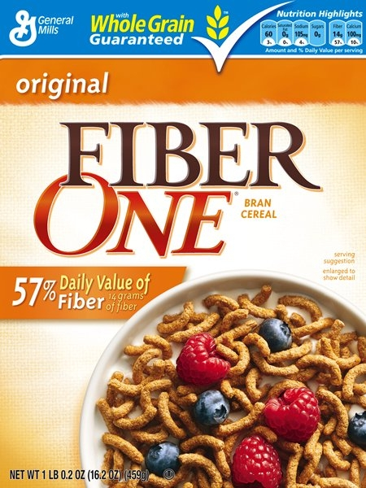
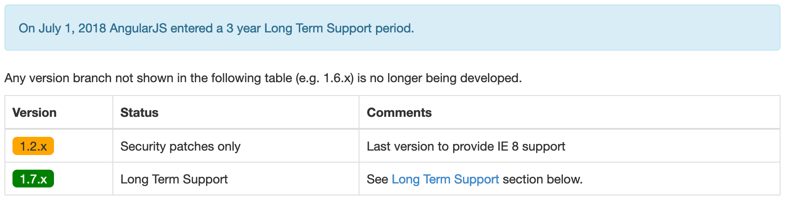
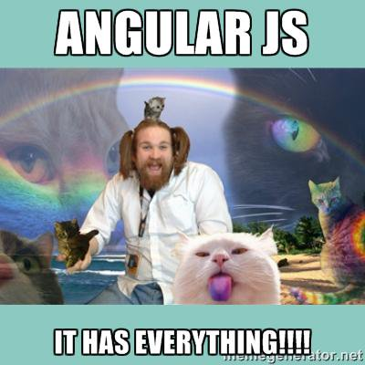

Angular
Decyzje Architektoniczne
Perspektywa... ma znaczenie :)


Binding
Angular (2+)
<!-- one-way binding, as AngularJS --> {{ propertyFromClass }}<!-- listening to DOM event $event is optional here --> <button (click)="methodFromClass($event)"><!-- DOM property binding --> <a [href]="anotherProperty">{{ yetAnother }}</a><!-- the only two-way binding both ngModel property and ngModelChange event added --> <input [(ngModel)]="andAnother" />
Decyzje Architektoniczne
- One-way binding
Binding - cd.
Rozwiązanie? Zone.js!
- Odpalanie asynchronicznych operacji w "strefie"
- Lepszy stack trace, możliwość śledzenia i mierzenia wywołań
- Zastosowania? Debug, testowanie, profilowanie, odtwarzanie ścieżki użytkownika ("tu kliknąłem")
To tak można?

Decyzje Architektoniczne
- One-way binding
- Zone.js (kontrola nad async)
Kod


 



Decyzje Architektoniczne
- One-way binding
- Zone.js (kontrola nad async)
- Tłumaczenie kodu, statyczne typowanie
@angular/cli
Command Line Interface
npm i -g @angular/cling new PROJECT_NAME
Decyzje Architektoniczne
- One-way binding
- Zone.js (kontrola nad async)
- Tłumaczenie kodu, statyczne typowanie
- All-in-one
import { BrowserModule } from '@angular/platform-browser';
import { platformBrowserDynamic } from '@angular/platform-browser-dynamic';
import { NgModule, Component, Input } from '@angular/core';
@Component({
selector: 'angular-counter',
template: `
<div class="centered">
<button (click)="setCount(count - 1)">
-
</button>
<span>{{count}}</span>
<button (click)="setCount(count + 1)">
+
</button>
</div>
`
})
class Counter {
@Input() count: number;
setCount(count: number) {
this.count = count;
}
}
@Component({ selector: 'angular-app', template: '<angular-counter [count]="10">' }) class App { }
@NgModule({
imports: [ BrowserModule ],
declarations: [ App, Counter ],
bootstrap: [ App ]
})
class AppModule { }
platformBrowserDynamic().bootstrapModule(AppModule);
Decyzje Architektoniczne
- One-way binding
- Zone.js (kontrola nad async)
- Tłumaczenie kodu, statyczne typowanie
- All-in-one
- Modularność
package io.github.mat3e.demo
import io.reactivex.Observable
import org.springframework.stereotype.Component
import org.springframework.stereotype.Service
@Service
class DemoService {
fun getData(): Observable<String> {
return Observable.just(
"First",
"Second"
)
}
}
@Component
class DemoComponent(val service: DemoService) {
fun render() {
this.service.getData().subscribe { next -> println(next) }
}
}
Dzięki!
- 10 trendów JS: mat3e.github.io/trendy
- mat3e.github.io/talks/angular-arch/fb-dev